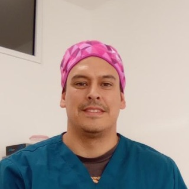

Un consultorio dental equipado con sillón, en Río Branco y 18 de Julio. Alquilás el turno que necesitás (todos los martes de tarde, todos los jueves de mañana) y ese horario queda a tu nombre.
Sin instalar un consultorio propio y sin pagar un alquiler mensual entero por los días que no atendés.

Lo que cuesta instalarse no es sólo el equipamiento: es sostener el alquiler todos los meses mientras armás tu agenda.
Si atendés dos tardes por semana, no tiene sentido pagar un consultorio los siete días. Pagás sólo el turno que elegís: las horas que no usás no te generan gastos.
El consultorio ya está montado y equipado. Llegás con tu instrumental y empezás a atender, sin adelantar el costo de armar un consultorio dental desde cero.
Empezás con un turno. Cuando se te llena, sumás horas sueltas desde la app o pasás a un segundo turno fijo. La estructura acompaña, no te adelanta.
El consultorio odontológico está listo para atender: nosotras ponemos las instalaciones y el mobiliario odontológico. El instrumental y los materiales son de cada profesional.
Lo que hace cómoda la jornada ya está resuelto antes de que llegues.
Sin costos de entrada y sin gastos comunes: el turno es tu único gasto fijo.
Odontólogos que ya atienden a sus pacientes en WeClinic.
Llegué a WeClinic buscando un consultorio para empezar a atender a mis pacientes y quedé fascinada con la elección. Me permitió desarrollarme profesionalmente y darles una atención de primera, en un lugar impecable, armonioso y moderno. Y sus dueñas están atentas a cada detalle para que nos sintamos cómodos.
 Damiana AlemánOdontóloga
Damiana AlemánOdontóloga
Llegué a WeClinic hace ya dos años, buscando un consultorio que me diera las comodidades de uno propio pero sin tener que preocuparme por las instalaciones ni por todo lo que conlleva armarlo. Desde entonces trabajo súper cómoda: es un espacio que brinda armonía y está todo resuelto, el equipamiento, la recolección de residuos, el locker para dejar mis cosas. Mis pacientes están a gusto y, lo que más me gusta, me siento como en casa y trabajo a mi manera.
Mi experiencia en WeClinic es súper recomendable, un lugar muy ameno donde se respeta y se cuida el espacio de cada uno de los que formamos parte. Tanto Jéssica como Fer están siempre atentas a que todo esté en orden y funcionando correctamente, y eso te permite darles una atención diferente a tus pacientes.

Pablo RolónOdontólogoRío Branco y 18 de Julio
Montevideo, Centro
Una dirección fácil de indicarle a un paciente, en el eje por donde ya se mueve todo el mundo.
Lo que más nos consultan los odontólogos.
Sí, ese es justamente el modelo. Alquilás un turno fijo (una mañana o una tarde de un día concreto de la semana) y no pagás los días que no atendés. Si necesitás más, sumás horas sueltas desde la app.
Sí. El consultorio ya está montado: sillón dental, taburete rodante, rodante auxiliar, mobiliario odontológico, cavitador, cuba de desinfección y horno esterilizador. Vos llegás con tu instrumental, tus materiales y tus pacientes.
No. Nosotras brindamos las instalaciones y el mobiliario odontológico: sillón dental, taburete rodante, rodante auxiliar, cavitador, cuba de desinfección y horno esterilizador. El instrumental y los materiales son personales de cada profesional.
Aire acondicionado en el consultorio, sala de espera con baño para tus pacientes, un espacio propio para trabajar entre consultas, cocina equipada, lockers y Wi-Fi de alta velocidad. Todo entra en el precio del turno: no hay costo de entrada ni gastos comunes.
En Río Branco y 18 de Julio, pleno centro de Montevideo, conectado con las principales líneas de ómnibus y con estacionamientos en la zona. Es una dirección fácil de indicarle a un paciente.
Es el caso más común entre quienes alquilan acá. Instalar un consultorio propio exige una inversión inicial grande y un alquiler fijo mensual que hay que sostener desde el primer mes. Con un turno fijo empezás a atender con un costo acotado y vas ampliando a medida que crece tu agenda.
Sí. Coordinamos una visita con vos y te mostramos el consultorio odontológico, la sala de espera y las áreas comunes, sin compromiso. Escribinos al +598 98 616 259 o por Instagram y arreglamos día y hora.
¿Buscás un consultorio para otra especialidad? Mirá todos los consultorios en alquiler →
Contanos qué días necesitás el consultorio odontológico y te pasamos la disponibilidad. Si querés conocerlo antes, coordinamos una visita.
Escribinos por WhatsAppO por Instagram · info@weclinic.uy